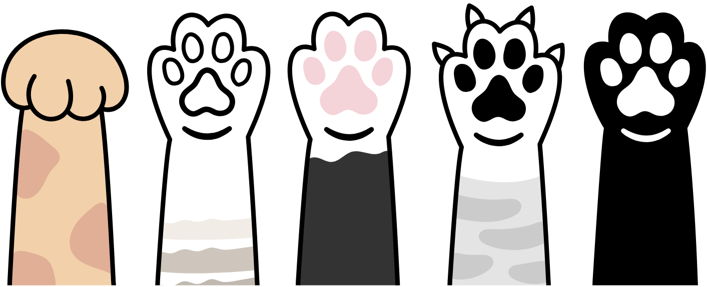

Encuentra a tu amigo fiel
Conecta adoptantes con refugios y hogares de tránsito

Requisitos
Requisitos para iniciar la adopción

-
Ser mayor de edad
Tener 18 años o más para garantizar responsabilidad legal en el cuidado del gato.
-
Compromiso de cuidado
Brindar atención, amor y cuidados constantes durante toda la vida del gato.
-
Hogar seguro
Tener un espacio protegido y libre de peligros (ventanas seguras, ambiente adecuado).
-
Seguimiento inicial
Aceptar que el refugio o tránsito realice un seguimiento durante el período de adaptación.
-
Trabajo estable
Contar con una fuente de ingresos que permita cubrir alimentación, salud y otras necesidades del gato.
-
Tiempo disponible
Dedicar tiempo diario para juego, compañía y cuidados.